Atención a domicilio
Enfermeras y TENS en tu casa: inyecciones, curaciones, sueros y más.
Reserva enfermeras y TENS que van a tu casa, hazte exámenes y guarda todo en una ficha que tu familia también puede ver.
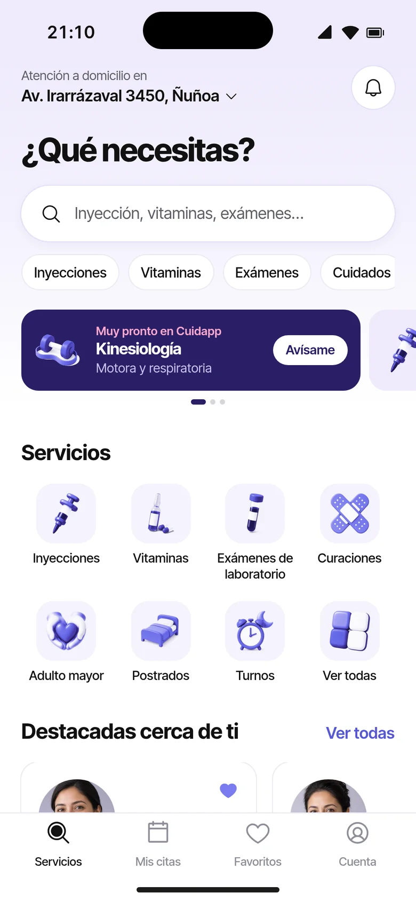
Enfermeras y TENS en tu casa: inyecciones, curaciones, sueros y más.
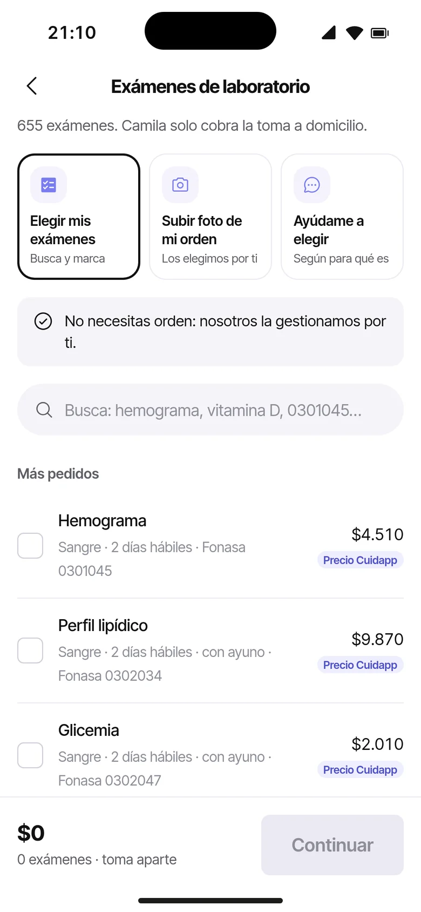
Elige entre 655 exámenes, con o sin orden médica.
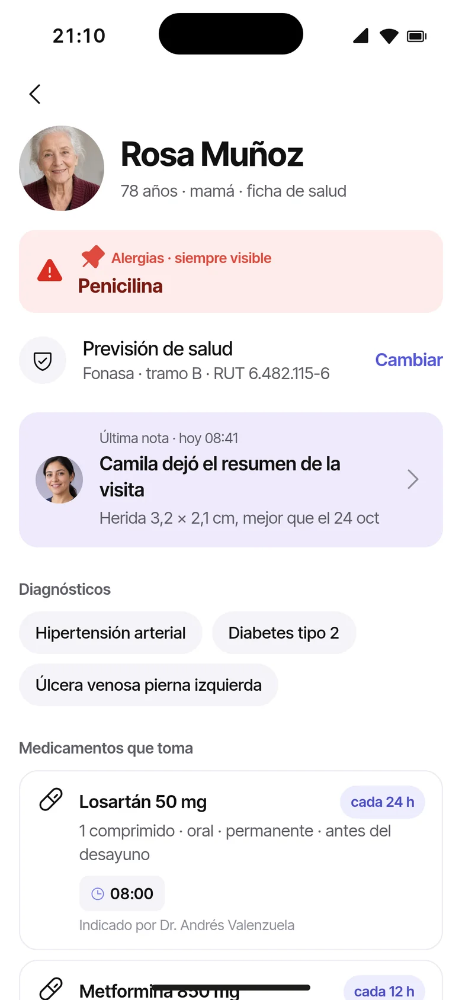
Lo que anota cada profesional, ordenado y visible para tu familia.
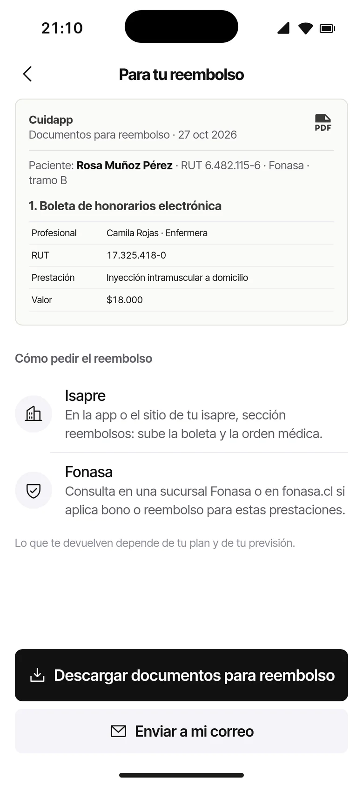
Boleta y detalle de prestaciones listos para Fonasa o tu Isapre.
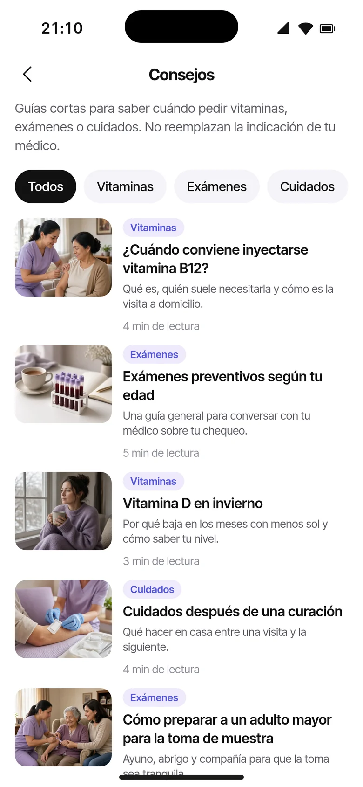
Guías cortas sobre vitaminas, exámenes y cuidados.
Vincula tu Isapre una vez y nosotros enviamos los documentos.
Compara planes con asesores, sin salir de Cuidapp.
Tus medicamentos junto a tu atención.
Tres pasos, desde que eliges hasta que te atienden.
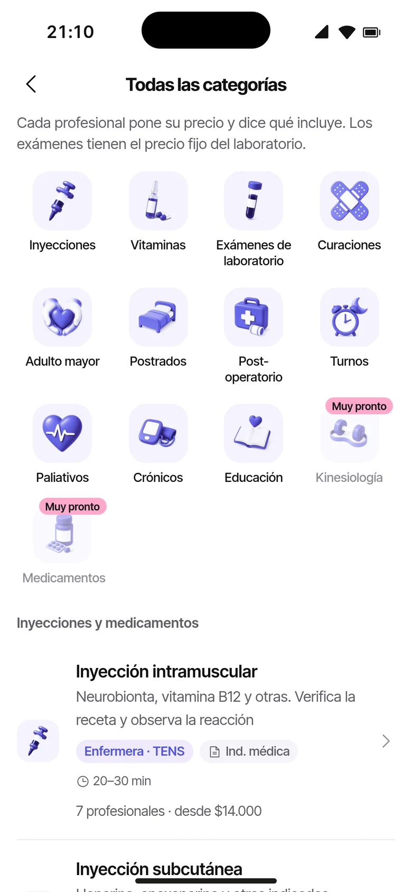
Busca por servicio o categoría. Ves qué incluye y cuánto cuesta antes de reservar.
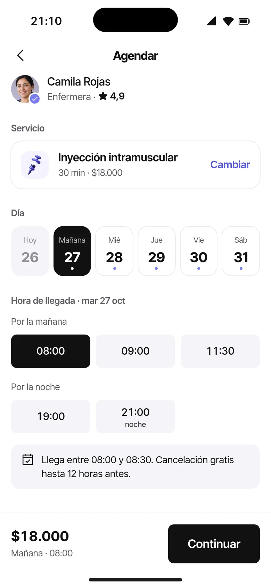
Eliges a la persona, el día y la hora. Pagas con tarjeta al confirmar.
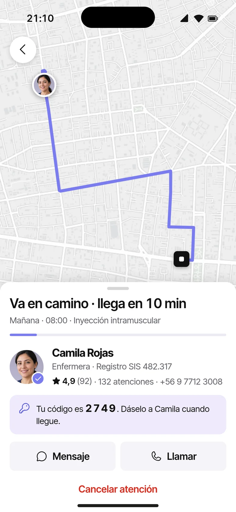
Sigues su llegada en el mapa y, al terminar, recibes el resumen de la visita.
Cuéntanos qué te indicó tu médico y te ayudamos a encontrar la atención correcta.
Ver todos los serviciosToman la muestra en tu casa o vas a la sucursal que prefieras. Tú eliges cómo empezar.
Biomarcadores Muy pronto
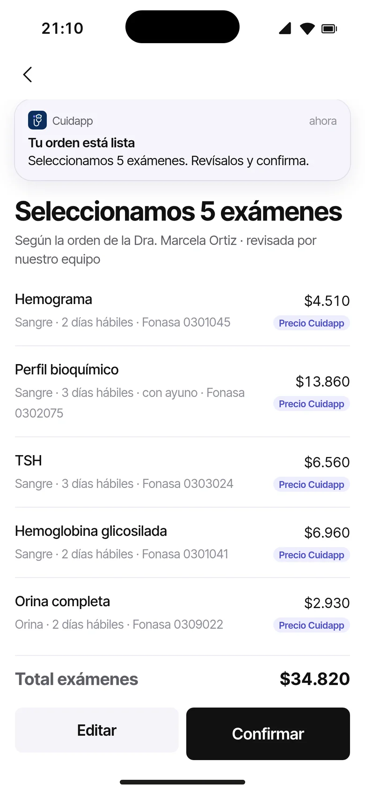
Compara laboratorios cerca de tu dirección y elige si vienen a tu casa o vas tú.
Nombres de ejemplo.
Ves su perfil completo antes de reservar y conversas con ella por chat.
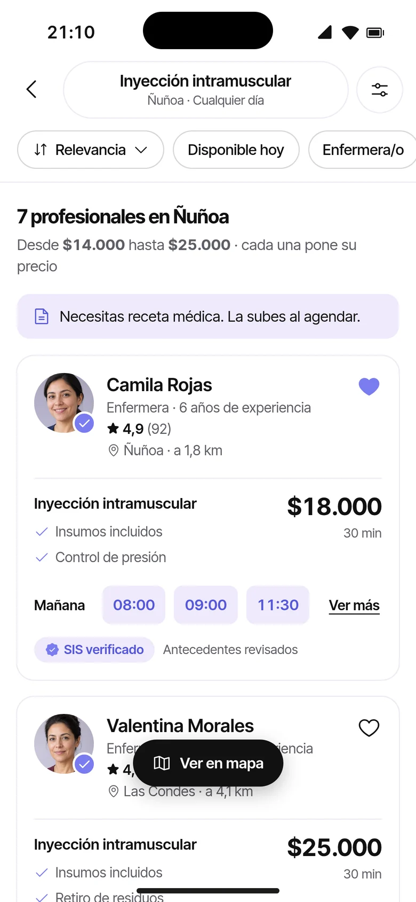
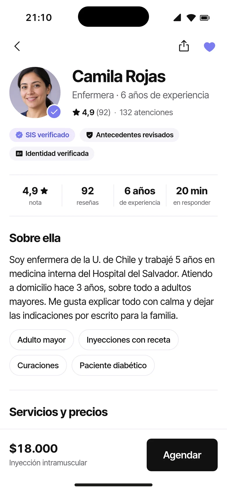
Cada profesional anota en la misma ficha: diagnósticos, alergias, remedios y curaciones. Tú la ves completa.
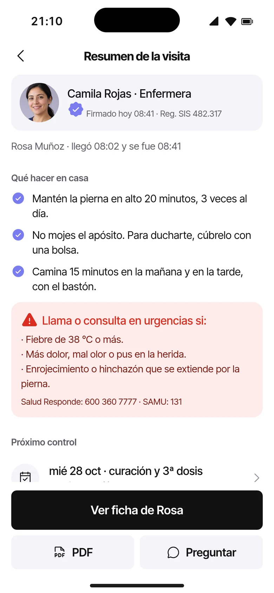
Al terminar, la profesional deja un resumen con lo que hizo y las indicaciones para los próximos días.
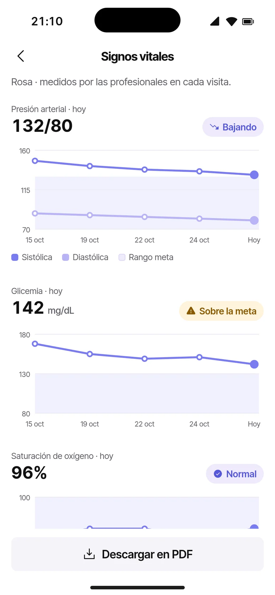
Presión, pulso, temperatura, saturación y glicemia registrados en cada visita.
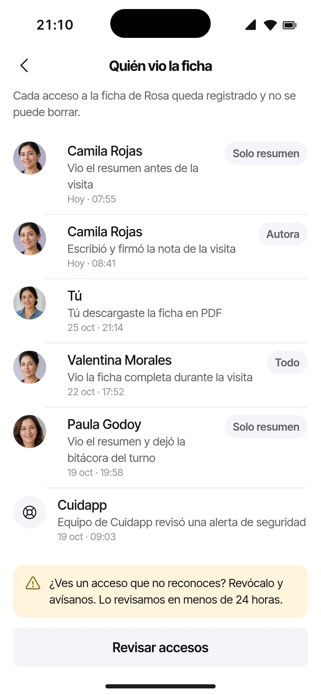
Comparte la ficha con tu familia o cuidadores y revisa quién la abrió y cuándo.
Descargas la boleta y el detalle de prestaciones para pedir tu reembolso.
Si aplica y cuánto te devuelven depende de tu plan. Información general, no es asesoría legal.
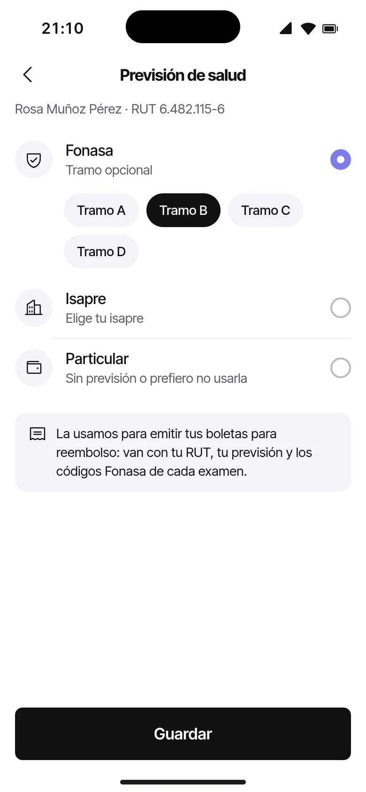
El agente de Cuidapp envía la boleta, la orden médica y tu carnet después de cada atención.
Ingresas tus datos una vez y asesores de distintas Isapres te muestran sus planes.
Las condiciones de cada plan las define cada Isapre. Información general, no es asesoría legal ni financiera.
Defines tus servicios, precios, comunas y horario. Dictas la nota de la visita y queda en la ficha.
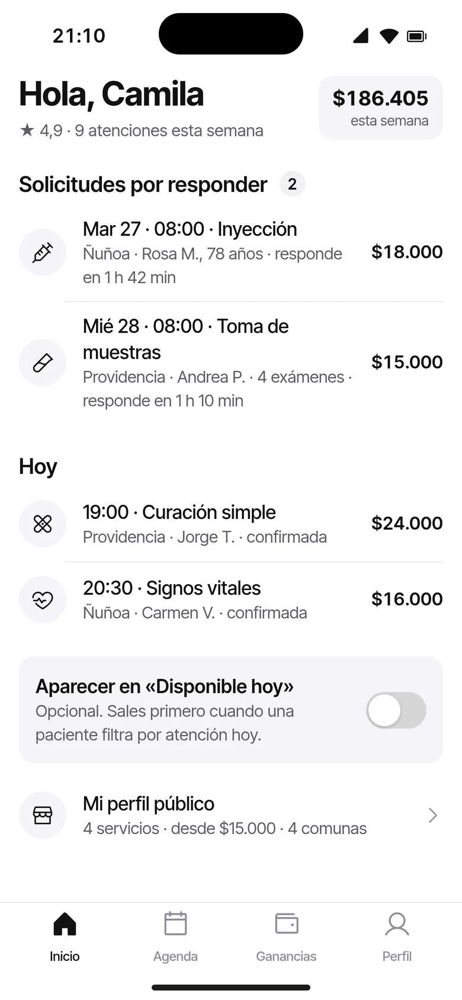
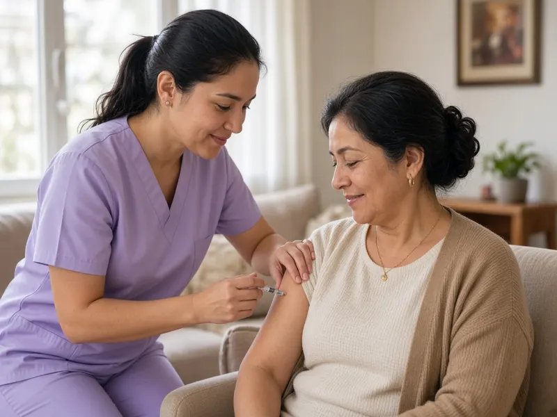
Vitaminas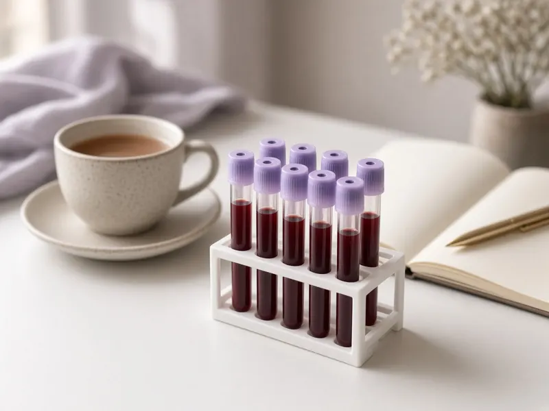
Exámenes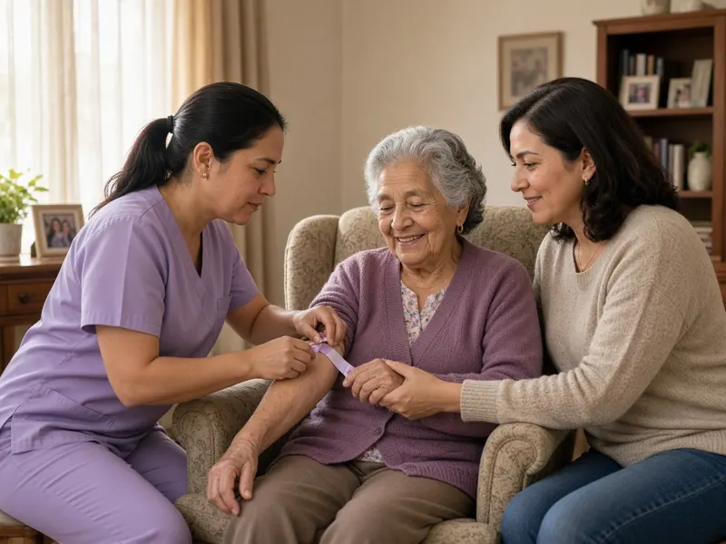
CuidadosNo reemplazan la indicación de tu médico.
Enfermeras y TENS. Antes de atender revisamos su registro en la Superintendencia de Salud, su identidad y sus antecedentes. En su perfil ves su experiencia, sus servicios y las reseñas de otras familias.
No es obligatoria. Puedes elegir tus exámenes, subir la foto de tu orden para que los seleccionemos por ti, o pedir ayuda para elegir según para qué los necesitas. Para inyecciones y algunos tratamientos sí te pediremos la receta.
Sí. En «Laboratorios cerca de ti» eliges el laboratorio y si quieres que vayan a tu casa o ir tú a su sucursal.
Pagas con tarjeta al reservar. Antes de confirmar ves el precio total y lo que incluye. En tu primera atención tienes 15% de descuento con el código CUIDA15.
Partimos en Santiago. Al poner tu dirección ves qué profesionales atienden en tu comuna.
Tú decides quién tiene acceso. Puedes compartirla con tu familia o cuidadores y ver quién la abrió y cuándo.
Te entregamos la boleta y el detalle de las prestaciones para que lo pidas. Si aplica y cuánto te devuelven depende de tu plan y tu previsión. Esto es información general y no constituye asesoría legal.
Vinculas tu Isapre una vez y el agente de Cuidapp envía la boleta, la orden médica y tu carnet después de cada atención. Está sujeto a las condiciones de cada Isapre y estará disponible muy pronto.
Una forma de comparar planes de distintas Isapres con asesores, dentro de Cuidapp. Estará disponible muy pronto. Las condiciones de cada plan las define cada Isapre.
Hoy atienden enfermeras y TENS; kinesiología, psicología, telemedicina y nutrición vienen muy pronto, y ya puedes postular. Subes tu carnet, una selfie y tu título, y agregas la cuenta donde quieres recibir tus pagos. Luego armas tu perfil con tus servicios, precios, comunas y horario.
Escríbenos desde la sección Aliados. Los laboratorios se suman gratis y los asesores de Isapre aparecen en «Cotiza tu Isapre» con un plan mensual.